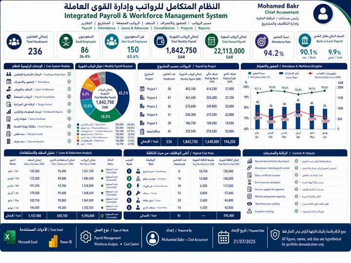
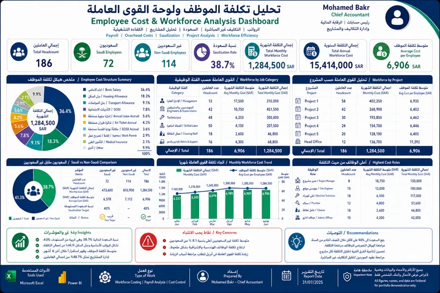
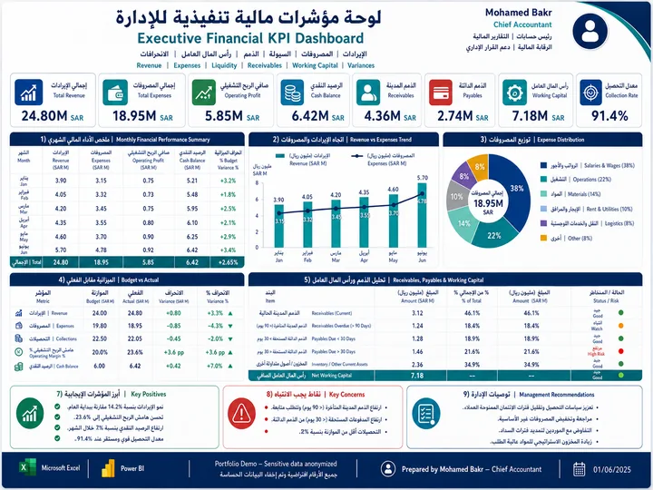
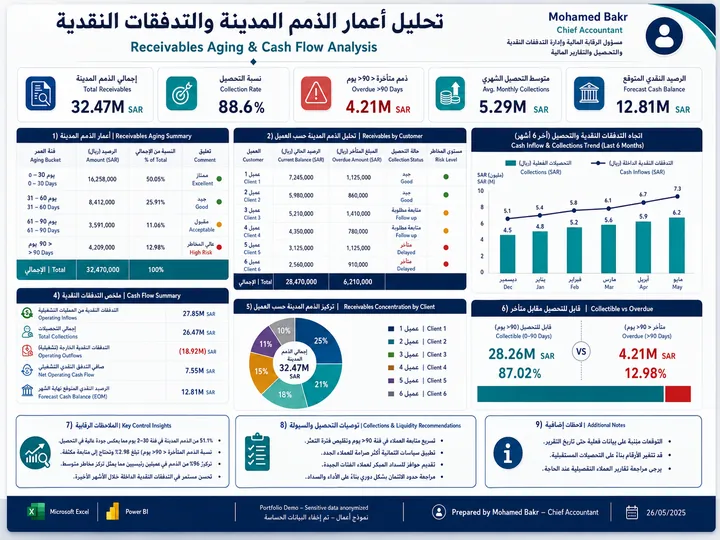
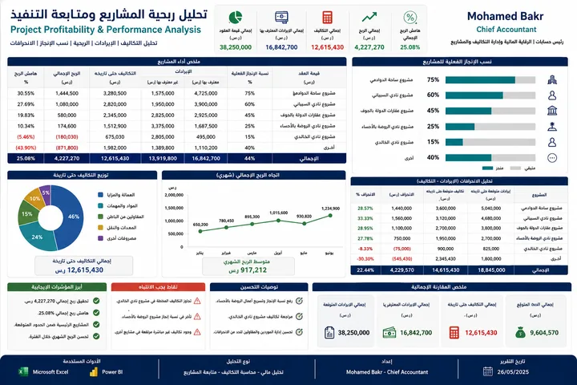
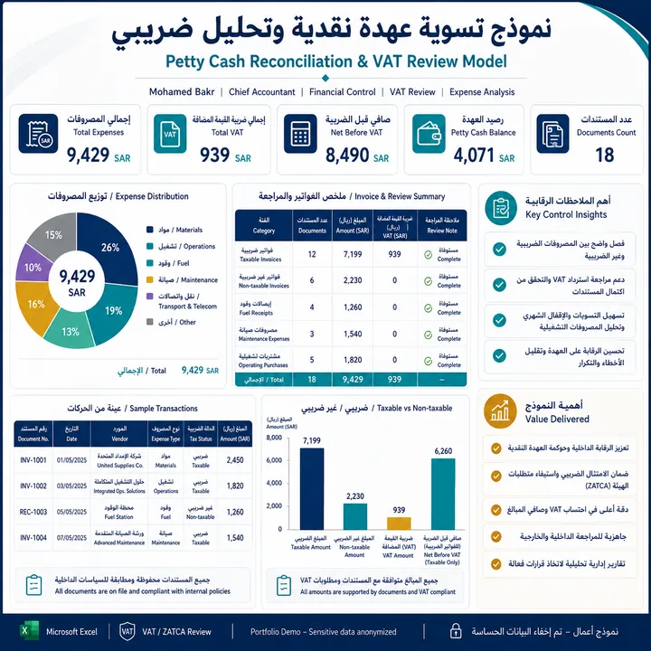
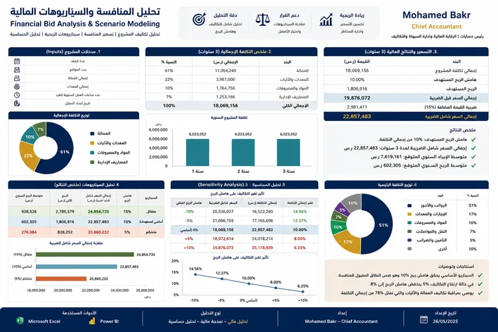
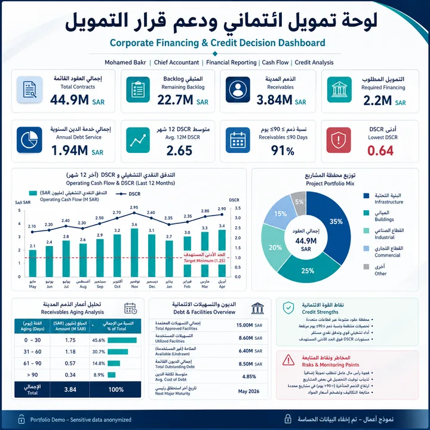

Financial Reporting & Closing
Trial balance review, month/year-end close, financial statements, schedules and audit readiness.
15+ years of hands-on experience in financial reporting, cash flow and liquidity, VAT & ZATCA, project accounting, cost control, internal control and management reporting.
Open to selected part-time, remote, project-based and finance advisory opportunities in Riyadh and across Saudi Arabia.
Chief Accountant and finance professional with more than 15 years of progressive experience in accounting, financial control, financial reporting, liquidity management, taxation, internal controls, project accounting and management reporting in Saudi Arabia.
I focus on turning complex accounting data into clear, reliable information that supports management decisions, strengthens controls, protects liquidity and improves financial discipline.
رئيس حسابات بخبرة تتجاوز 15 عامًا في المحاسبة والرقابة المالية وإعداد التقارير وإدارة السيولة والضرائب ومحاسبة المشاريع، مع التركيز على تحويل البيانات المالية إلى معلومات واضحة تدعم القرار الإداري.
Practical financial support for companies, SMEs and project-based businesses.
Trial balance review, month/year-end close, financial statements, schedules and audit readiness.
Cash forecasting, working capital analysis, collections visibility and payment prioritization.
VAT reconciliation, tax reporting preparation, e-invoicing controls and compliance review.
Project revenue, cost, margin, progress, budget and variance analysis.
Receivables aging, collections, supplier balances, bank reconciliations and discrepancy reviews.
Executive dashboards, financial models, KPI reporting, Excel analytics and Power BI.








Selected examples of finance leadership, control improvement and decision support.
Prepared and finalized annual financial statements, supporting schedules and audit requirements in line with IFRS.
Built cash-flow visibility, prioritized obligations and prepared financing packages for banks and financing companies.
Managed VAT reporting, input-VAT recovery, tax reconciliations and e-invoicing compliance requirements.
Reorganized prior-period accounting records, improved documentation and strengthened closing and control procedures.
Progressive experience from hands-on accounting operations to financial leadership.
Financial reporting, closing, liquidity management, VAT/ZATCA, project analysis, financing support and audit readiness.
Project billing, collections, receivables aging, revenue matching and Odoo-based accounting support.
Branch audits, cash and inventory controls, sales review, risk assessment and corrective-action follow-up.
GL, AR/AP, bank reconciliations, monthly reporting, budgets, project-cost analysis and audit support.
Progressed through storekeeping and cashier operations into accounting, building a strong foundation in inventory, cash, journals and supplier payments.
A practical mix of ERP, accounting, analytics and Saudi compliance platforms.
Available for selected accounting, reporting, financial analysis, project-accounting and advisory opportunities.